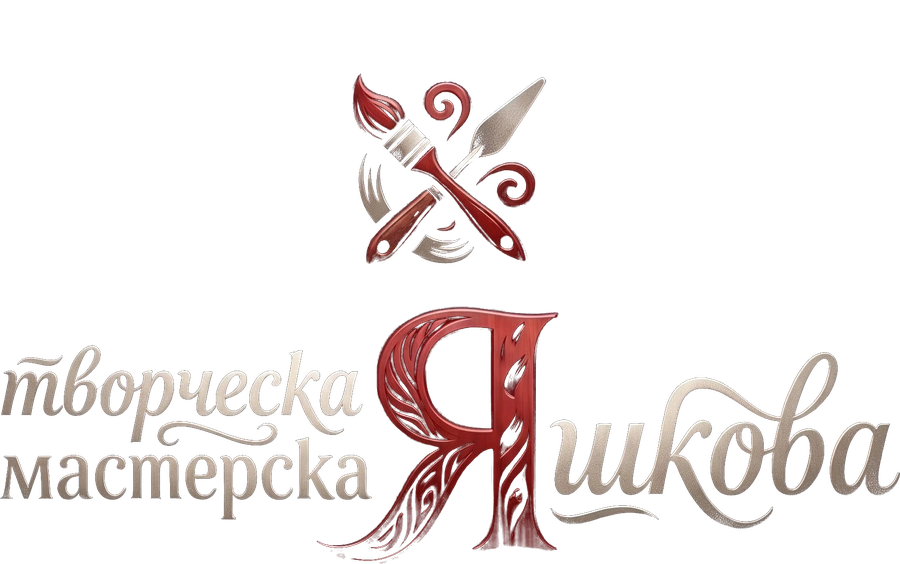
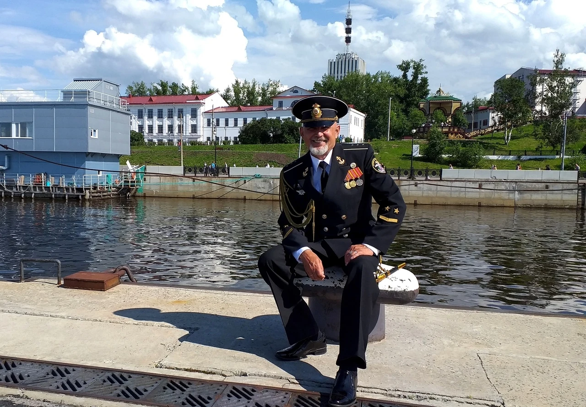
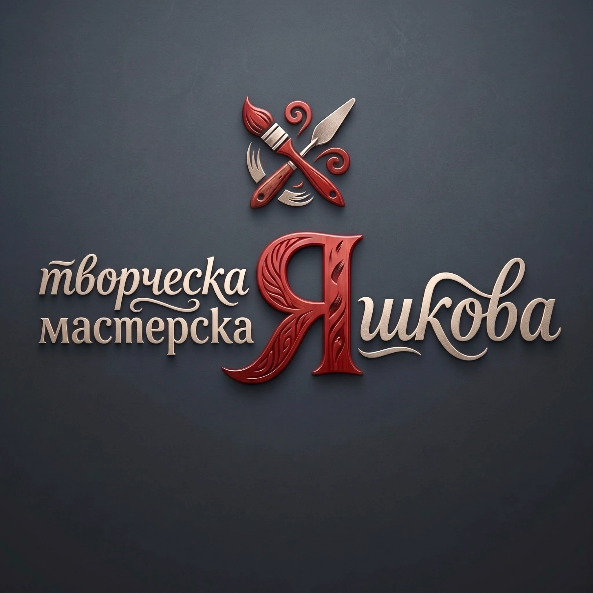

Авторская работа · СХР
Александр Яшков — художник-живописец, график из Архангельска. Его главная тема — «Родина — Север»: северный свет, поморские традиции и красота природы на языке классической реалистической школы.

Александр Николаевич Яшков родился 21 марта 1969 года в Холмогорах. С детства тянулся к рисованию, и изобразительное искусство стало делом всей жизни.

С 1987 по 2014 год — служба в Военно-морском флоте. На протяжении всей жизни не оставлял занятий искусством. В 2009 году в Холмогорском краеведческом музее открылась первая персональная выставка, за ней последовали экспозиции в Ломоносово, Новодвинске, Северодвинске и Архангельске.
В 2018 году с отличием окончил Архангельский колледж культуры и искусства (специальность «Живопись», станковая живопись), а в 2019 году — программу Летней школы по рисунку и живописи в Российской академии художеств им. И.Е. Репина в Санкт-Петербурге. Член Союза художников России, Международного союза педагогов-художников и Профессионального союза художников России, лауреат премии имени М.В. Ломоносова.
В 2020–2022 годах участвовал в росписи Спасо-Преображенского морского собора в Архангельске, а в 2023-м по его эскизам в Онеге установлен памятник погибшим воинам СВО. В 2025 году отмечен благодарностью Правительства Архангельской области и Министерства культуры за вклад в развитие современного изобразительного искусства. В 2026 году удостоен Благодарности Союза художников России (г. Москва) «За большой вклад в развитие современного изобразительного искусства Российской Федерации».
Живопись маслом, графика. Станковые и пленэрные работы.
Ведущая студия образовательного формата в Архангельске, зарегистрирована в реестре Международного союза педагогов-художников. Более 30 учеников в год.
Студия расположена в Архангельске в исторической Соломбале (Никольский проспект, д. 44, корп. 1). Обучение от базовой изобразительной грамоты до углублённой подготовки.

Для всех занятий материалы предоставляются!
Записаться на занятие в VKПостоянный участник выставочных проектов Союза художников России, областных, региональных, зональных, всероссийских и международных выставок, фестивалей и конкурсов. География пленэров — от Арктики до Африки.
К Году культуры Русского Севера. г. Архангельск.
Премьера в Архангельском театре драмы: танец, живопись и музыка соединяются в исследовании творчества Александра Яшкова.
Экспозиция в Краеведческом музее посёлка Пинега Архангельской области.
Холмогорские леса и озёра, река Пинега, Онега, Белое море и остров Кий; Москва, Ярославль, Кострома, Казань, Чебоксары, Нижний Новгород, Волга.
г. Архангельск, выставочный зал «Поморская АРТель».
Выставка произведений художников Северо-Западного федерального округа, г. Псков.
с. Красноборск Архангельской области.
Государственный Кремлёвский дворец, г. Москва.
По вопросам приобретения работ, участия в выставках и записи в мастерскую — свяжитесь удобным способом.
Оформление и доставка работ до формата А3, большие форматы — по договорённости.
✆ +7 (921) 673-53-30Занятия живописью, графикой и рисунком. Материалы предоставляются.
✆ +7 (921) 673-53-30Настоящая Политика обработки персональных данных составлена в соответствии с Федеральным законом РФ от 27.07.2006 № 152-ФЗ «О персональных данных» и определяет порядок обработки и меры по обеспечению безопасности данных на сайте yashkov29.ru (Оператор: художник Яшков Александр Николаевич, г. Архангельск).
Сайт yashkov29.ru носит исключительно информационно-ознакомительный характер и не содержит веб-форм сбора, регистрации или хранения персональных данных. Связь с художником осуществляется через прямые ссылки (телефонный вызов, сообщения ВКонтакте или электронную почту).
Сайт использует файлы cookie и обезличенные данные статистики (Яндекс.Метрика) исключительно для анализа посещаемости и улучшения работы сайта. Данные не содержат информации, позволяющей идентифицировать личность конкретного пользователя. Вы можете отключить сохранение cookie в настройках своего браузера.
При добровольном обращении пользователя по телефону или email его данные (имя, номер, адрес) используются только в целях ответа на поступивший запрос и не передаются третьим лицам.
По любым вопросам, касающимся настоящей Политики, вы можете связаться: email: art_yashkov@mail.ru, тел.: +7 (921) 673-53-30.